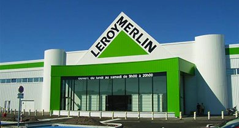

leader français sur le marché du bricolage et d’aménagement
Près de 2 500 recrutements en moyenne par an
23 000 collaborateurs dans 140 magasins en France
Un chiffre d’affaires de plus de 6,7 milliards d’euros en 2018
Des opportunités de parcours à l’international dans 13 pays dans le monde
De magnifiques uniformes (disponible en S,L,M,XL et XXL)
Notre histoire
En 1923, Adolphe Leroy et Rose Merlin, enfants de commerçants et futurs jeunes mariés, créent à Nœux-les-Mines une société de surplus militaire baptisée « Au Stock américain ».
L'activité principal est la revente des surplus de l'Armée américaine restés sur le territoire français après la Grande Guerre.
Les créateurs de l'entreprise constatent assez rapidement une augmentation de la demande en matière de construction et d'aménagement de la maison.
Ils vendent donc des meubles et des produits de construction provenant des baraquements américains désassemblés.
Jusque-là, le particulier ne pouvait se les procurer que par l'intermédiaire de leur artisan local : le marché du bricolage vient de naître.
Formule de candidature
Vous hésistez a postuler chez Leroy Merlin mais vous avez peur de ne pas être à la hauteur ?!
Nos experts ont pensé à vous ! Passez dès maintenant notre test afin de savoir si votre profil nous interésse
Des Questions ??
Si vous avez une interrogation quelconque, notre chatbot disponible 24h/24 est prêt à vous répondre.
Vous retrouverez aussi une liste des meilleurs éléments formés par nos soin
On pense a vous !
Afin que les employés retrouvent plus facilement leur lieu de travail nous avons pris l'initiative de metre le logo LEROY MERLIN sur la devanture de tous les magasins,
de ce fait les personnes avec un sens de l'orientation assez faible pourront retrouver leur chemin.

Pratique et sobre, cette devanture est pensée pour que l'employé puisse commencer sa journée en toute gaieté.
Nous contacter : 05 59 90 34 00 rue Chanzy, Lezennes, 59712 Lille Cedex 9